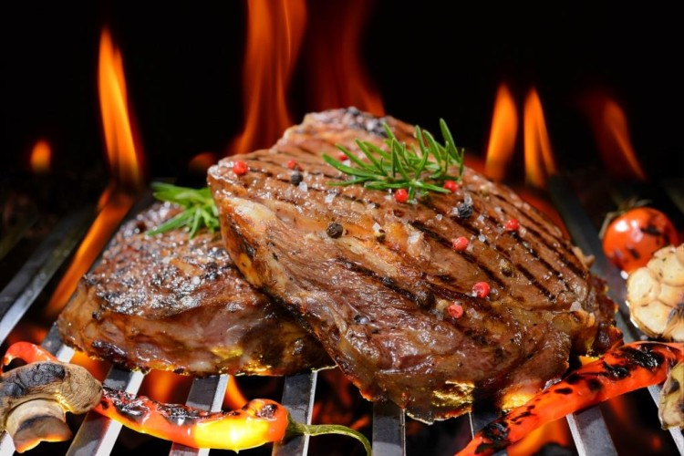
📝 المكونات
- الستيك : 2 شريحة
- زيت الزيتون : 2 ملعقة كبيرة
- ملح خشن : رشّة
- فلفل أسود : رشّة (مطحون طازج)
- الثوم : فصّان (مهروس)
- روزماري : ملعقة صغيرة
- الزبدة : قطعة (صغيرة)
👩🍳 طريقة التحضير
- أخرجي اللحم من الثلاجة قبل الشواء بحوالي 30 دقيقة حتى يصل لحرارة الغرفة.
- ادهني شرائح اللحم بزيت الزيتون، ثم تبّليها بالملح والفلفل الأسود.
- سخّني المقلاة أو الشواية جيداً، ثم ضعي شرائح الستيك واتركيها دون تحريك لمدة 3 دقائق.
- اقلبي الشرائح على الجهة الأخرى واتركيها لمدة 4 دقائق.
- أضيفي الزبدة والثوم والروزماري، وادهني اللحم بالزبدة أثناء الشواء.
- ارفعي اللّحم عن النار، واتركيه يرتاح لحوالي 5 دقائق قبل التقطيع.
- ضعي ستيك اللحم المشوي في طبق التقديم، وقدميه ساخناً.
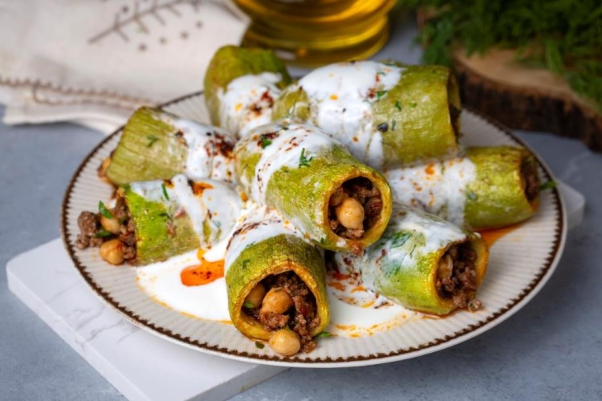
📝 المكونات
- الكوسا : كيلو (محفور)
- لحم مفروم : نصف كيلو
- لوز : 200 غم (مقطع)
- لبن رايب : 2 ليتر
- النشاء : 3 ملاعق صغيرة
- مرق دجاج : 2 مكعب
- فلفل أسود : ملعقة صغيرة
- بهارات مشكلة : ملعقة صغيرة
- زيت نباتي : 2 ملعقة كبيرة
- ملح : ملعقة صغيرة
👩🍳 طريقة التحضير
- اقلي اللوز وضعيه جانباً.
- اطهي اللحم المفروم وبهّريه، ثم أضيفي اللوز عليه.
- احشي الكوسا بخليط اللحم المفروم واللوز، واقلي حبات الكوسا بالزيت حتى تتحمر من جميع الجهات.
- ضعي اللبن بقدر على النار، ثم أضيفي النشاء ومرق الدجاج وحركي، وأضيفي حبات الكوسا المقلية.
- اتركي المخشي على النار لمدة 15 دقيقة، ثم قدميه بجانب الأرز الأبيض المطبوخ.

📝 المكونات
- عصير الطماطم : 3 أكواب
- الثوم : 3 فصوص
- ملح : حسب الرغبة
- فلفل أسود : حسب الرغبة
- كمون : رشّة
- كزبرة يابسة : رشّة
- سمن : ملعقة كبيرة
- لحم مفروم : كيلو
- الأرز : كوب (منقوع في ماء ساخن لحوالي 30 دقيقة)
- البصل : 2 حبة
- الثوم : 3 فصوص
- الشبت : نصف ضمة
- بقدونس : حزمة
- كزبرة خضراء : حزمة
- زيت للقلي : غزير
👩🍳 طريقة التحضير
- لتحضير الكفتة: صفّي الأرز واطحنيه، أضيفي الأعشاب المفرومة والبصل والثوم، ثم اللحم، واطحني المكونات بالخلاط.
- ضعي المزيج في الثلاجة حوالي ساعة، ثم شكّليه وأقليه بالزيت الغزير.
- لتحضير الصلصة: ذوبي السمن وأضيفي عصير الطماطم والبهارات، ثم أضيفي الكفتة المقلية واتركيها تنضج.
- أضيفي الثوم قبل 5 دقائق من رفع الصلصة عن النار، وقدمي الكفتة ساخنة مع الصوص.
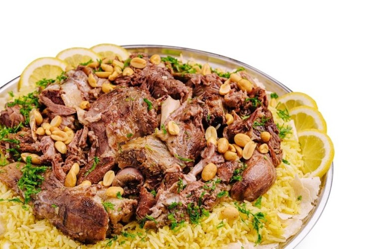
📝 المكونات
- لبن جميد : رأس
- ماء ساخن : 3 أكواب
- لبن زبادي : 2 كوب
- نشا : ملعقة كبيرة
- أرز مصري : 3 أكواب (قصير الحبة ومنقوع)
- سمن : 3 ملاعق كبيرة
- كركم : ملعقة صغيرة
- ملح : حسب الرغبة
- لوز : نصف كوب (محمص)
- خبز : 2 رغيف (صاج أو شراك)
- لحم خروف : 2 كيلو (مقطع بالعظم)
- بصل : 2 حبة (مقطع أرباع)
- ورق غار : 3 أوراق
- هيل : 6 حبات
- فلفل أسود : ملعقة صغيرة (صحيح)
- قرفة : عود
- ماء : حسب الحاجة
- بقدونس : حسب الرغبة (مفروم)
👩🍳 طريقة التحضير
- ابشري الجميد وانقعيه في الماء الساخن، ثم اخلطيه مع اللبن الزبادي والنشا.
- اسلقي اللحم مع البصل والبهارات حتى ينضج.
- حضري خليط الجميد على النار وأضيفي مرق اللحم تدريجياً حتى القوام المطلوب، ثم أضيفي اللحم.
- حضري الأرز بالسمن والكركم والملح، ورتّبي الطبق بالخبز، الأرز، اللحم، وصبي خليط الجميد، وزيني باللوز والبقدونس.
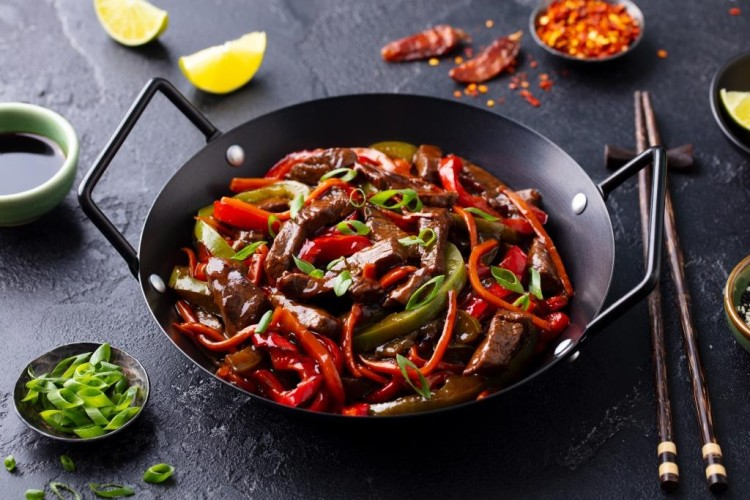
📝 المكونات
- لحم بفتيك : 6 قطع
- بصل أحمر : 2 حبة
- فلفل رومي أخضر : 1 حبة
- فلفل رومي أحمر : 1 حبة
- ثوم : فص
- مرق دجاج : ملعقة كبيرة
- زبدة : ملعقة صغيرة
- زيت زيتون : 2 ملعقة كبيرة
- ملح وفلفل وقرفة : حسب الرغبة
- طماطم : 2 حبة (مبشورة)
👩🍳 طريقة التحضير
- قطعي البصل، الثوم، والفلفل الرومي إلى شرائح.
- تبلي لحم البفتيك بالملح، الفلفل والقرفة.
- اقلي اللحم 3/4 استواء، أضيفي البصل، الثوم، الفلفل، ثم الطماطم واتركي 20 دقيقة.
- أضيفي صوص مرق الدجاج وقدمي ساخناً.
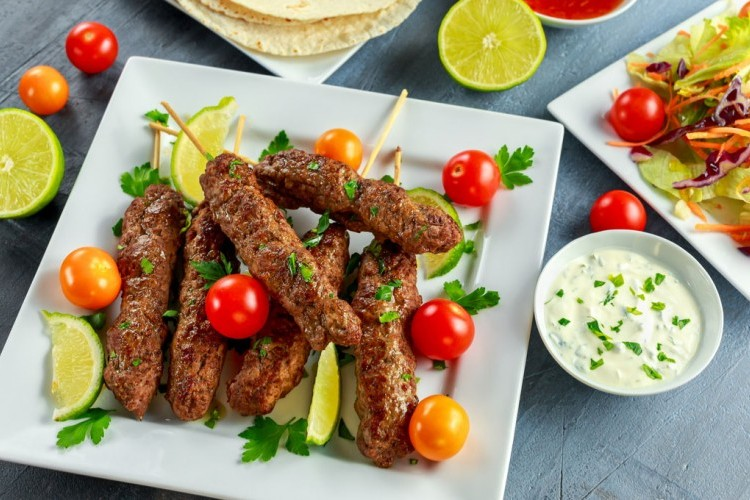
📝 المكونات
- لحم مفروم : كيلو (دهون 25–30%)
- بصل أبيض : 1 حبة (مبشور)
- بقدونس : 2 ملعقة كبيرة (مفروم)
- ملح : ملعقة كبيرة
- فلفل أسود : ملعقة صغيرة
- جوزة الطيب : رشة
- بيكربونات الصوديوم : نصف ملعقة صغيرة
- معجون طماطم : ملعقة صغيرة
- فحم : قطعة
👩🍳 طريقة التحضير
- ابشري البصل واعصريه، واحتفظي بماء البصل.
- اعجني اللحم مع تفل البصل، البهارات، البيكربونات، والبقدونس لمدة 10–15 دقيقة.
- ضعي الخليط في الثلاجة ساعتين على الأقل.
- شكلي الكفتة على الأسياخ، اشويها على الفحم، ثم ضعي الفحم المشتعل في طبق بجانب الكفتة لامتصاص الرائحة.
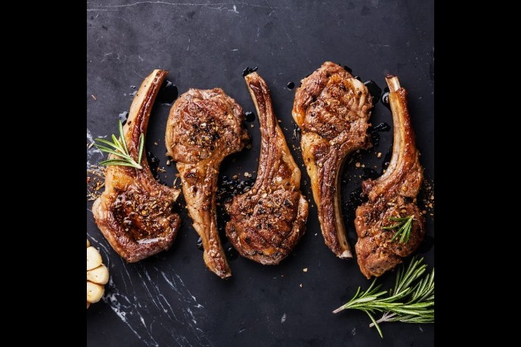
📝 المكونات
- لحم ضأن : كيلو (قطع الظهر أو الكتف)
- ثوم : 4 فصوص (مفروم)
- زيت زيتون : 2 ملعقة كبيرة
- ملح : 2 ملعقة صغيرة
- فلفل أسود : ملعقة صغيرة
- كمون : ملعقة صغيرة
- كزبرة : ملعقة صغيرة
- روزماري : ملعقة صغيرة
- زعتر مجفف : ملعقة صغيرة
- عصير ليمون : 1 حبة
- ماء : كوب
- بصل : 2 حبة
- جزر : 2 حبة
- بطاطس : 2 حبة
👩🍳 طريقة التحضير
- اخلطي التتبيلة: الثوم المفروم، زيت الزيتون، الملح، الفلفل، الكمون، الكزبرة، إكليل الجبل، الزعتر، وعصير الليمون حتى تتجانس.
- افركي قطع لحم الضأن بالتتبيلة جيداً، واتركيها منقوعة من 2 إلى 4 ساعات (يمكن تركها طوال الليل).
- حضري الخضروات: ضعي شرائح البصل والجزر والبطاطس في صينية، أضيفي القليل من الزيت والملح والفلفل وامزجي جيداً.
- ضعي اللحم المتبّل فوق الخضروات، أضيفي كوب ماء أو مرق لحم.
- سخّني الفرن على 180°م، غطّي الصينية بورق ألومنيوم، واتركيها 1.5–2 ساعة.
- أزيلي الورق واتركي اللحم يتحمر 20–30 دقيقة حتى يصبح ذهبي اللون.
- اتركي اللحم يرتاح 10 دقائق قبل التقطيع، وقدميه مع الخضروات المحمصة والأرز أو الخبز.
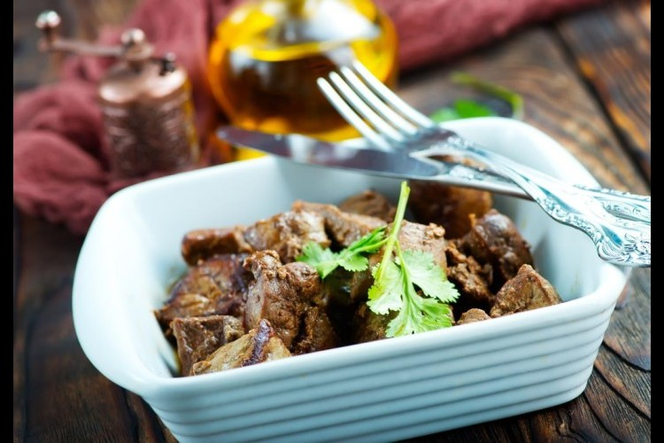
📝 المكونات
- كبدة : نصف كيلو
- خل : قليل
- زيت نباتي : ربع كوب
- ملح : ربع ملعقة كبيرة
- فلفل أسود : رشّة
- زنجبيل : ربع ملعقة صغيرة
- كمون : رشّة
- جوزة الطيب : حسب الرغبة
- عصير ليمون : حسب الرغبة
👩🍳 طريقة التحضير
- حمّي الزيت في مقلاة غير لاصقة.
- تتبيل الكبدة: امزجي جميع البهارات، عصير الليمون، والخل مع الكبدة، ويفضل تركها ليلة كاملة.
- قلّي الكبدة مع الفلفل، ثم خفّفي النار وغطيها 5 دقائق.
- قدميها مع الخبز والبطاطس المحمرة.
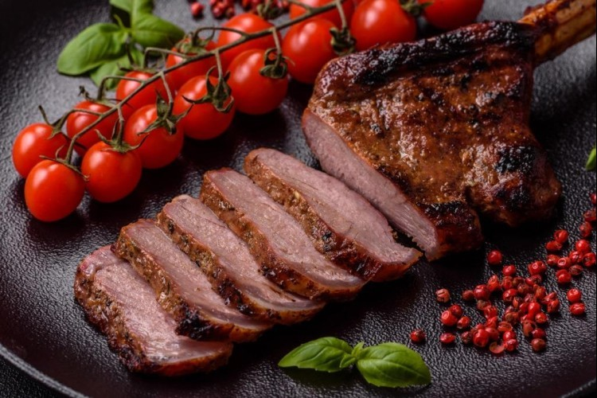
📝 المكونات
- لحم : كيلو (شرائح)
- ثوم : 6 فصوص (مهروس)
- زيت زيتون : 4 ملاعق كبيرة
- صويا صوص : 2 ملعقة كبيرة
- كاتشب : 2 ملعقة كبيرة
- خل أبيض : نصف كوب
- دبس الرمان : ملعقة كبيرة
- ملح : 2 ملعقة صغيرة
- فلفل أسود : ملعقة صغيرة
- بودرة بصل : ملعقة صغيرة
- زنجبيل : نصف ملعقة صغيرة
- قرفة : نصف ملعقة صغيرة
- زيت نباتي : 2 ملعقة كبيرة
👩🍳 طريقة التحضير
- للتتبيلة: امزجي الثوم، الخل، زيت الزيتون، الصويا صوص، الكاتشب، دبس الرمان، الملح، الفلفل، بودرة البصل، الزنجبيل، والقرفة.
- ادعكي شرائح اللحم بالتتبيلة جيداً، ثم ضعيها في الثلاجة 3 ساعات.
- سخّني الشواية وادهنيها بالزيت، رصي الشرائح وتقليبها حتى تنضج من الجهتين.
- قدميها ساخنة.
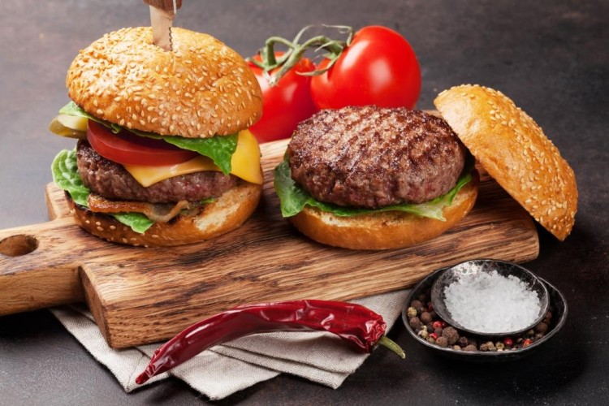
📝 المكونات
- لحم بقر مفروم : كيلو
- بصل : 1 حبة (مبشور)
- بيض : 1 حبة
- فتات خبز : نصف كوب
- ملح : ملعقة صغيرة
- فلفل أسود : ملعقة صغيرة
- بهارات البرغر : ملعقة كبيرة
- خبز برجر : 4 حبات
- خس : كوب (مقطع)
- طماطم : 1 حبة (شرائح)
- بصل : 1 حبة (شرائح)
- جبن شيدر : 4 شرائح
- كاتشب ومايونيز : حسب الرغبة
👩🍳 طريقة التحضير
- اخلطي اللحم، البصل، البيض، فتات الخبز، الملح، الفلفل، والبهارات جيداً.
- شكّلي الأقراص وضعها في الثلاجة 30 دقيقة.
- سخّني المقلاة وأقلي الأقراص حتى تنضج.
- جهزي الخبز مع الخس، الطماطم، البصل، ثم ضعي اللحم المشوي وشريحة الجبن.
- أضيفي الكاتشب والمايونيز وقدمي مع البطاطس المقلية.
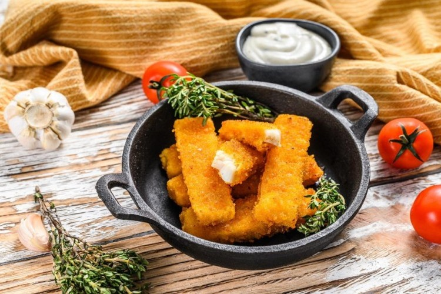
📝 المكونات
- سمك فيليه : 1 كيلو (أبيض مخلي)
- عصير ليمون : 2 ملعقة كبيرة
- ملح : 1 ملعقة صغيرة
- فلفل أسود : نصف ملعقة صغيرة
- ثوم بودرة : 1 ملعقة صغيرة
- بابريكا : 1 ملعقة صغيرة (اختياري)
- دقيق : 1 كوب
- نشاء الذرة : 2 ملعقة صغيرة
- حليب : 2 ملعقة كبيرة
- بقسماط : 1 كوب (مطحون)
- زيت نباتي : غزير للقلي
👩🍳 طريقة التحضير
- قطّعي الفيليه بعد غسله جيداً إلى شرائح بسماكة ~1.5 سم، وجففيها بمناديل المطبخ.
- تبّلي بالليمون والملح والفلفل والثوم البودرة والبابريكا، واتركيها في الثلاجة 30 دقيقة.
- حضّري التغليف: وعاء بالدقيق والنشا، وعاء بالحليب مع الملح والفلفل، وعاء بالبقسماط.
- غمّسي السمك أولاً في الدقيق، ثم الحليب، ثم البقسماط.
- ضعيها في الثلاجة 15 دقيقة لتتماسك التغليفة.
- سخّني الزيت واقلي على دفعات حتى يصبح ذهبي ومقرمش.
- قدميها ساخنة مع البطاطس المقلية أو السلطة والصوص المفضل.
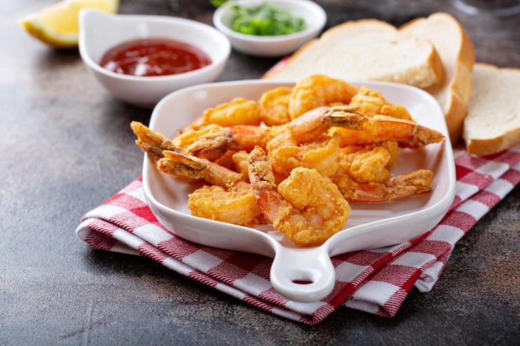
📝 المكونات
- جمبري : 500 غرام (متوسط الحجم مقشر ومنظف)
- دقيق أبيض : 1 كوب
- نشاء الذرة : نصف كوب
- بيض : 1 حبة (مخفوق)
- حليب : نصف كوب
- ثوم بودرة : 1 ملعقة صغيرة
- بابريكا : 1 ملعقة صغيرة
- فلفل أسود : نصف ملعقة صغيرة
- ملح : حسب الرغبة
- زيت نباتي : 2 كوب للقلي
👩🍳 طريقة التحضير
- تبّلي الجمبري بالملح والفلفل والثوم البودرة والبابريكا لمدة 10 دقائق.
- اخلطي الدقيق مع النشا، واغمسي الجمبري في البيض والحليب ثم في خليط الدقيق والنشا.
- سخّني الزيت واقلي الجمبري على دفعات 2-3 دقائق لكل جانب حتى يصبح ذهبي اللون.
- ضعيه على ورق مطبخ لامتصاص الزيت الزائد وقدميه ساخناً مع الصوص.
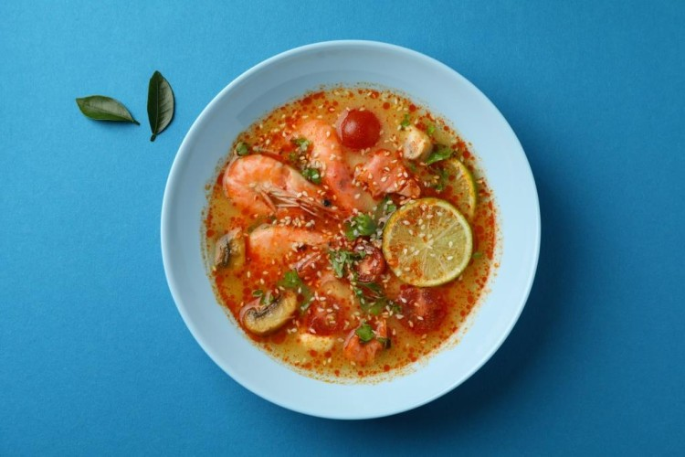
📝 المكونات
- جمبري : 500 غرام (طازج، مقشر ومنظف)
- مرق خضار : 1 لتر
- بصل : 1 حبة (مقطع)
- ثوم : 3 فصوص (مفروم)
- زنجبيل : 1 ملعقة كبيرة (مبشور)
- جزر : 2 حبة (مكعبات)
- فلفل حار : 1 حبة (مفروم)
- كرفس : 4 أعواد (مقطع)
- كركم : نصف ملعقة صغيرة
- كزبرة خضراء : نصف كوب (للتزيين)
- عصير ليمون : 1 حبة كبير
- صلصة الصويا : 2 ملعقة كبيرة
- سكر : 1 ملعقة صغيرة
- ملح وفلفل أسود : حسب الرغبة
👩🍳 طريقة التحضير
- في قدر، سخّني القليل من الزيت، وشوّحي البصل حتى يذبل.
- أضيفي الثوم، الزنجبيل، والفلفل الحار، وقلّبي دقيقة.
- أضيفي الجزر والكرفس وقلّبي 5 دقائق.
- صبي مرق الخضار وأضيفي الكركم، واتركيه يغلي 10-15 دقيقة.
- أضيفي الجمبري واطهي 3-5 دقائق حتى يصبح وردياً.
- اخلطي عصير الليمون، الصويا صوص، السكر، الملح والفلفل، وأضيفيه للشوربة قبل التقديم.
- زيني بالكزبرة المفرومة وقدمي ساخنة.
📝 المكونات
- أرز السوشي الأبيض : 1 كوب
- خل الأرز : 2 ملعقة كبيرة
- سكر : 1 ملعقة صغيرة
- ملح : رشة
- ورق نوري : 2 ورقة
- أفوكادو : نصف حبة (شرائح)
- خيار : نصف حبة (شرائح رفيعة)
- تونا أو سلمون : 100 غرام
- صويا صوص : حسب الرغبة
👩🍳 طريقة التحضير
- اغسلي الأرز جيداً حتى يصبح ماء الغسل صافياً، ثم اطهيه في كوب ونصف ماء.
- اخلطي خل الأرز مع السكر والملح وأضيفيه للأرز الدافئ وقلّبيه برفق.
- ضعي ورقة النوري على حصيرة لف، وافردي طبقة رقيقة من الأرز.
- ضع الحشوة على الطرف القريب، ولفّي بإحكام، ثم قطّعي اللفة إلى 6–8 قطع متساوية.
- قدّمي السوشي مع صوص الصويا.
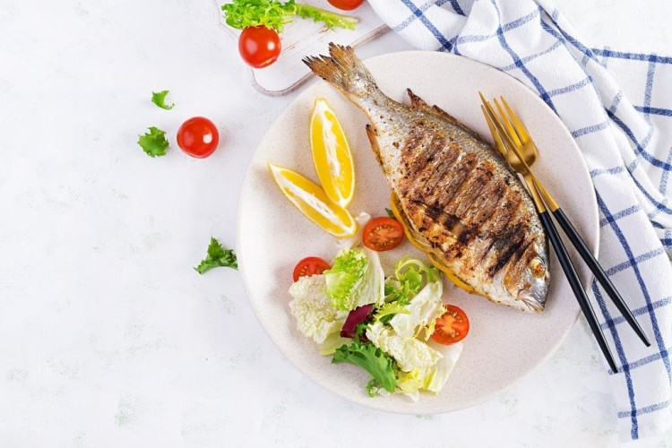
📝 المكونات
تتبيلة السمك المشوي بالصويا صوص
- سمك دينيس : 2 حبة (منظف)
- ثوم : 4 فصوص (مهروس)
- بصل : 1 حبة (مبشور)
- كمون : نصف ملعقة صغيرة
- فلفل أسود : نصف ملعقة صغيرة
- صويا صوص : 1 ملعقة كبيرة
- زيت زيتون : 1 ملعقة كبيرة
- كزبرة خضراء : 3 ملاعق كبيرة (مفرومة)
👩🍳 طريقة التحضير
- اخلطي الزيت مع الصويا صوص والكمون في طبق، وأضيفي الثوم والبصل المبشور والفلفل والكزبرة.
- اصنعي شقوق طولية في السمك، وضعيه في التتبيلة وغطيه، واتركيه ساعتين في الثلاجة.
- اشوي السمك بالفرن بالطريقة المفضلة وقدميه ساخناً.

📝 المكونات
- سلطعون : 1 حبة (كاملة ومنظفة)
- زبدة غير مملحة : نصف كوب
- عصير ليمون : ربع كوب
- ثوم : 2 فص (مفروم)
- بقدونس : 1 ملعقة صغيرة (مفروم)
- ملح وفلفل أسود : حسب الرغبة
- زيت الزيتون : 1 ملعقة كبيرة
- إكليل الجبل : 1 ملعقة صغيرة
- زعتر : 1 ملعقة صغيرة
- ليمون : 1 حبة (شرائح للتزيين)
👩🍳 طريقة التحضير
- ادهني السلطعون بزيت الزيتون وتبليه بالملح والفلفل والأعشاب.
- اشويه في الفرن 10–15 دقيقة حتى ينضج.
- ذوّبي الزبدة مع الثوم على نار متوسطة، أضيفي عصير الليمون والبقدونس، وتبليه بالملح والفلفل.
- اسكبي الصوص على السلطعون المشوي وزيني بشرائح الليمون وقدميه ساخناً.
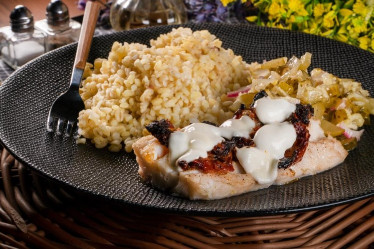
📝 المكونات
- سمك فيليه : 1 كيلو
- أرز مصري : 2 كوب
- بصل : 3 حبات
- عصير الطماطم : 5 حبات
- معجون طماطم : 1 ملعقة كبيرة
- ثوم : 1 ملعقة كبيرة (مفروم)
- ملح، سكر، كمون، كزبرة يابسة، فلفل حار، فلفل رومي : حسب المقادير
- عصير ليمون : 2 حبة
- دقيق : نصف كوب (لتغليف السمك)
- زيت : للقلي
- كزبرة خضراء : للتزيين
👩🍳 طريقة التحضير
- سخني الزيت وشوّحي البصل والثوم، ثم أضيفي عصير الطماطم والفلفل ومعجون الطماطم والتوابل، واتركيها على نار هادئة.
- غطي السمك بالدقيق واقليه حتى ينضج.
- أضيفي كوب ماء مغلي على الصلصة وربطة كزبرة، ثم أضيفي السمك واتركيه دقيقة.
- لتحضير الأرز: سخني الزيت، أضيفي البصل وحمّريه، ثم أضيفي الأرز والتوابل وقلّبي، أضيفي الماء وغطيه 25 دقيقة حتى ينضج.
- قدمي الأرز مع صيادية السمك الساخنة.
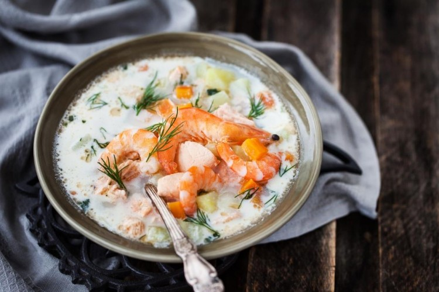
📝 المكونات
- روبيان : 250 غرام
- كالاماري : 250 غرام
- سمك فيليه : 250 غرام
- محار : 250 غرام
- طحين : 3 ملاعق كبيرة
- حليب : 2 كوب
- زبدة : 2 ملعقة كبيرة
- ثوم : 2 فص (مفروم)
- ملح وفلفل : حسب الرغبة
- مرق دجاج : 1 مكعب
- جبن بارميزان : نصف كوب
- بقدونس : 2 ملعقة كبيرة
👩🍳 طريقة التحضير
- اغسلي المأكولات البحرية واتبليها بالملح والفلفل.
- اقلي السمك في زيت لمدة دقيقتين لكل جهة.
- ذوّبي الزبدة مع الثوم حتى يصبح ذهبي، أضيفي الطحين وقلبيه 30 ثانية.
- أضيفي الحليب والمرق تدريجياً مع التحريك، ثم جبن البارميزان.
- أضيفي المأكولات البحرية واتركيها تغلي 5 دقائق.
- اسكبي الشوربة في أطباق وزينيها بالبقدونس.
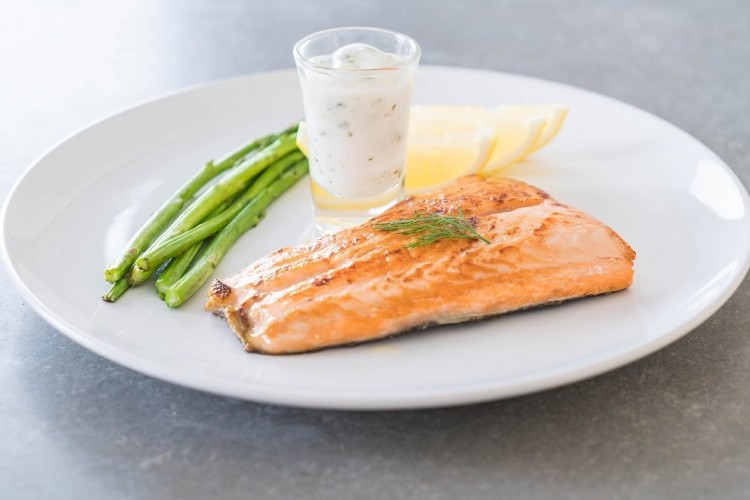
📝 المكونات
- سلمون : 4 قطع
- شبت : 2 ملعقة كبيرة (مفروم)
- عصير ليمون : 1 حبة
- طماطم كرزية : 10 حبات
- ملح وفلفل أسود : رشة
- كريمة طبخ : ربع كوب
👩🍳 طريقة التحضير
- تبّلي قطع السلمون بالملح والفلفل وضعيها في صينية فرن.
- اخلطي كريمة الطبخ مع عصير الليمون والشبت وصبيها على السلمون.
- وزعي الطماطم على الوجه، وأدخلي الصينية الفرن على 180° مئوية لمدة 10–15 دقيقة.
- قدميها ساخنة.
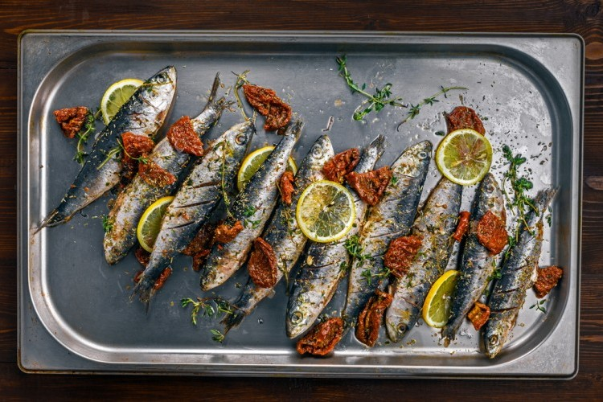
📝 المكونات
- سردين : 1 كيلو (منظف)
- ثوم : 2 فص (مهروس)
- خل أبيض : 1 ملعقة كبيرة
- ملح وفلفل أسود : نصف ملعقة صغيرة لكل منهما
- كمون : 1 ملعقة صغيرة
- عصير ليمون : ربع كوب
- فلفل أخضر : 1 حبة (مفروم)
- ليمون : 1 حبة (شرائح)
- فلفل أحمر مجفف : 100 غرام
- بصل : 1 حبة (مبشور)
- زيت زيتون : 3 ملاعق كبيرة
- ماء : ربع كوب
👩🍳 طريقة التحضير
- اخلطي عصير الليمون مع الخل والثوم والملح والكمون والفلفل والفلفل الأخضر والبصل وزيت الزيتون.
- تبّلي السردين بالخليط، ضعيه في طبق الفرن وأضيفي الماء وشرائح الليمون والفلفل المجفف.
- غطي بورق ألومنيوم وأدخلي الفرن على حرارة متوسطة 30 دقيقة، ثم أزيلي الغطاء وحمّري الوجه.
- قدميه ساخناً.
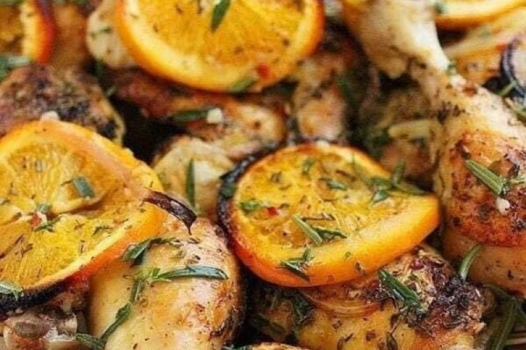
📝 المكونات
- دجاج : دجاجة كاملة
- زبدة : 2 ملعقة كبيرة
- بطاطس : 2 حبة
- ثوم : حسب الرغبة
- بصل : حسب الرغبة
- ريحان، بقدونس، كزبرة : حسب الرغبة
- زعتر : رشّة
- روزماري : حسب الرغبة
- ملح وفلفل أسود : حسب الرغبة
👩🍳 طريقة التحضير
- اخلطي البصل، الريحان، البقدونس، الكزبرة، الزعتر، الثوم، والروزماري مع الملح والفلفل والزبدة.
- تبّلي البطاطس والدجاج بالخليط.
- ضعي الدجاج والبطاطس في صينية الفرن وادهنيها بالزبدة المتبقية، ثم اخبزيها حتى تنضج.
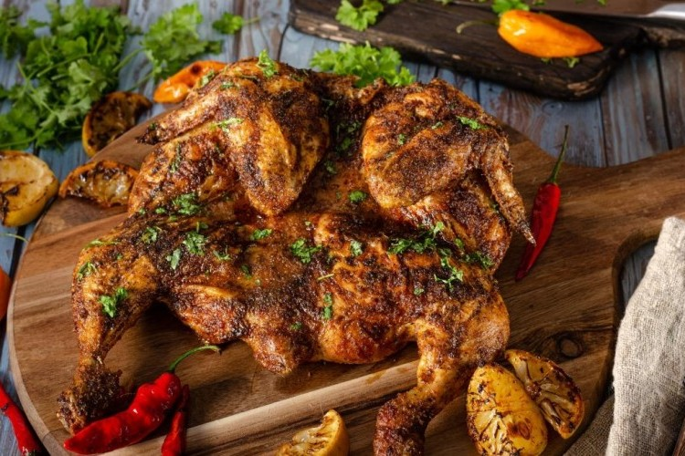
📝 المكونات
- صدر الدجاج : 1 كيلو (أو أفخاذ مقطعة)
- لبن زبادي : 2 ملعقة كبيرة
- بابريكا، كركم، كمون، بهار مشكل : ملعقة صغيرة لكل نوع
- ثوم : فصان مهروس
- زيت الزيتون : 2 ملعقة كبيرة
- عصير ليمون : نصف حبة
- ملح وفلفل أسود : حسب الرغبة
- صلصة: معجون طماطم، بابريكا، مرق دجاج، زبدة
- خبز تركي رقيق : حسب الرغبة للتقديم
👩🍳 طريقة التحضير
- اخلطي اللبن الزبادي مع التوابل والثوم والليمون وزيت الزيتون، وأضيفي قطع الدجاج لتتغطى بالتتبيلة.
- اتركيها 40 دقيقة لتتشرب النكهات، ثم اقليها في مقلاة حتى تتحمر وتنضج.
- لتحضير الصلصة: ذوّبي الزبدة وأضيفي معجون الطماطم والبابريكا، ثم المرق واطهي حتى تتكاثف قليلاً.
- قطّعي الخبز إلى مربعات، ضعيه في طبق، صبّي الصلصة، وزّعي الدجاج فوقه، ثم صبّي باقي الصلصة وقدمي ساخناً.
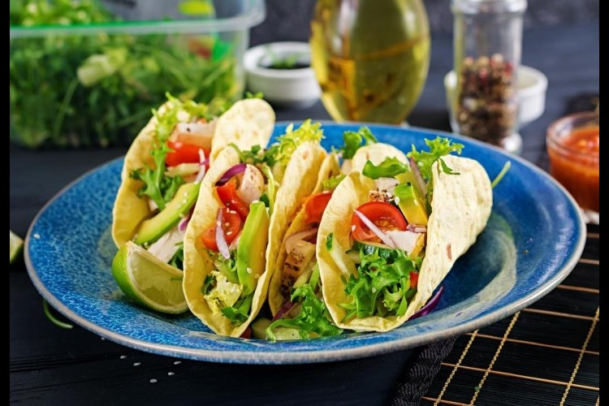
📝 المكونات
- شرائح دجاج : 500 غرام
- فتات خبز : 1.5 كوب
- توابل مدخنة : 40 غرام
- برش ليمون : ملعقة كبيرة
- بيض : 2 حبة
- دقيق : ثلث كوب
- ذرة : كوب (اختياري)
- خبز تاكو : 8 قطع
- خضار مشكلة، أفوكادو، كزبرة خضراء، عصير ليمون، ملح، فلفل أسود
👩🍳 طريقة التحضير
- اخلطي الخضار مع الأفوكادو والكزبرة وعصير الليمون، وضعي المزيج في الثلاجة.
- اخلطي فتات الخبز مع التوابل وبرش الليمون، واخفقي البيض.
- قلّبي شرائح الدجاج بالدقيق، ثم بالبيض، ثم بمزيج فتات الخبز.
- رشي الدجاج برذاذ الطبخ، واطهيه بالقلاية الهوائية 20 دقيقة مع الذرة.
- قدميه في خبز التاكو مع صلصة الخضار.

📝 المكونات
- للكباب: لحم مفروم 500 غرام، بصل، ثوم، بقدونس، ملح، فلفل، بهارات مشكلة، كمون
- لشيش طاووق: صدر دجاج 500 غرام، فلفل رومي، بصل، لبن زبادي، عصير ليمون، زيت زيتون، بابريكا، ثوم، كركم، ملح، فلفل أسود
👩🍳 طريقة التحضير
- اخلطي مكونات الكباب وشكّليها على أسياخ، واشويها على الفحم أو الشواية 8–10 دقائق مع التقليب.
- اخلطي مكونات شيش طاووق، واتركي الدجاج يتتبّل ساعة على الأقل.
- شكّي الدجاج على أسياخ مع الفلفل والبصل، واشوي 12–15 دقيقة حتى يتحمر.
- قدمي المشاوي مع السلطات والمقبلات.
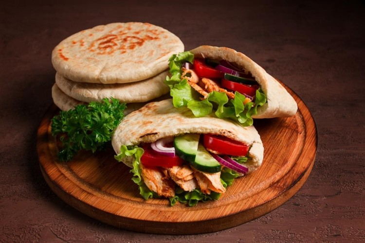
📝 المكونات
- صدر دجاج : 500 غرام (شرائح رفيعة)
- زبادي، عصير ليمون، خل أبيض، ثوم، قرنفل، زيت زيتون، بهارات شاورما، ملح، فلفل أسود، بابريكا، كركم، كمون
- بصل، بقدونس، خيار مخلل، خبز ميني
👩🍳 طريقة التحضير
- اخلطي الزبادي، عصير الليمون، الخل، الثوم والبهارات مع الدجاج وقلّبي 10 دقائق.
- سخّني مقلاة غير لاصقة على نار متوسطة، وأضيفي الدجاج حتى يتحمر وينضج.
- أضيفي البقدونس والبصل، واملئي الخبز بالخليط مع الخيار المخلل والثومية.
- قدمي الشاورما دافئة مع البطاطس المقلية.
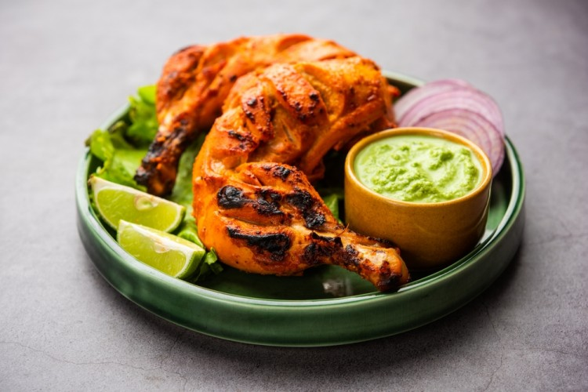
📝 المكونات
- دجاج : 1 كيلو (مقطع إلى قطع متوسطة)
- لبن زبادي : نصف كوب
- معجون طماطم : 2 ملعقة كبيرة
- عصير ليمون : 2 ملعقة كبيرة
- معجون ثوم بالزنجبيل : ملعقة صغيرة
- فلفل أحمر حار : ملعقة صغيرة
- بابريكا، كركم، بهارات جرام ماسالا، كمون مطحون : ملعقة صغيرة لكل نوع
- زيت نباتي : 2 ملعقة كبيرة
- ملح : رشّة
👩🍳 طريقة التحضير
- اخلطي اللبن، معجون الطماطم، عصير الليمون، معجون الثوم بالزنجبيل، الزيت، والبهارات في وعاء.
- أضيفي قطع الدجاج وقلّبي جيداً لتغليفها بالكامل، ثم غطيها واتركيها في الثلاجة 4 ساعات أو ليلة كاملة.
- سخّني مقلاة على نار متوسطة، وضعي قطع الدجاج المتبّلة واطهيها حتى تنضج وتتحمر.
- قدمي الدجاج ساخناً.
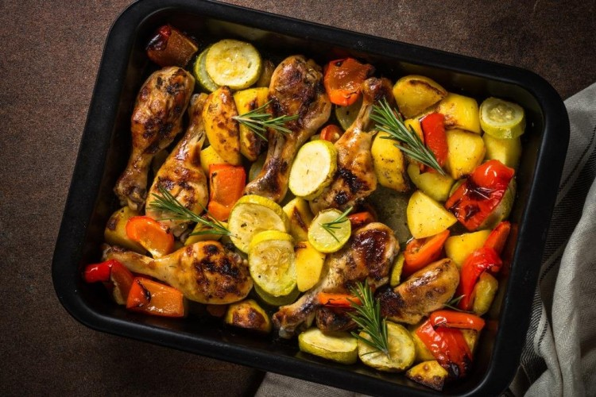
📝 المكونات
- دجاج : دجاجة مقطعة 6 قطع
- بطاطس : 2 حبة مكعبات
- جزر : 2 حبة شرائح
- فلفل رومي : 1 حبة شرائح
- بصل : 1 حبة حلقات
- ثوم : فصان مهروس
- زيت زيتون : 3 ملاعق كبيرة
- ملح، فلفل أسود، بابريكا، زعتر، عصير ليمون
👩🍳 طريقة التحضير
- اخلطي زيت الزيتون، الثوم، عصير الليمون، الملح، الفلفل، البابريكا، الزعتر، وقلّبي قطع الدجاج فيها.
- اتركي الدجاج منقوعاً بالتتبيلة 40 دقيقة.
- ضعي الخضار في صينية فرن مع رشة زيت وملح وفلفل، ثم ضعي الدجاج فوقها وصبّي باقي التتبيلة.
- غطّي الصينية بورق القصدير واخبزي 35 دقيقة، ثم أزيلي الورق واشوي 20 دقيقة حتى يتحمر الدجاج وتنضج الخضار.
📝 المكونات
- أفخاذ أو صدور دجاج : 4 قطع
- لبن زبادي : كوب
- ثوم وبودرة بصل، فلفل أحمر حار، ملح، فلفل أسود، بابريكا : حسب الوصفة
- لتغليف: دقيق أبيض 1 كوب، نشاء ذرة نصف كوب، ملح، فلفل أسود، بابريكا
- زيت نباتي للقلي : 3 أكواب
👩🍳 طريقة التحضير
- اخلطي اللبن مع التوابل لعمل تتبيلة الدجاج، وغطّي الدجاج بها واتركيه 4 ساعات أو ليلة كاملة.
- اخلطي الدقيق مع النشا والملح والفلفل والبابريكا للتغليف.
- اغمسي الدجاج في خليط الدقيق، ثم اقليه في الزيت الساخن حتى يتحمر ويصبح مقرمشاً.
- ضعي الدجاج على ورق ماص للزيت وقدميه ساخناً مع البطاطس المقلية.
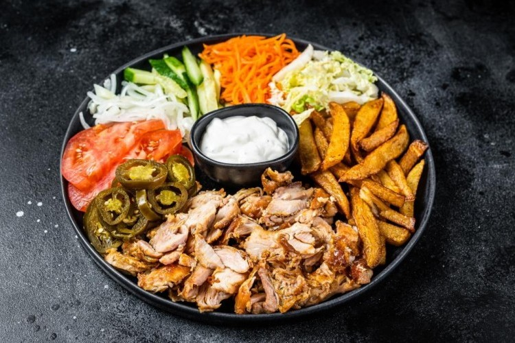
📝 المكونات
- صدر دجاج : 500 غرام شرائح رفيعة
- زيت زيتون، زبادي، ثوم، عصير ليمون، بهارات شاورما، ملح، فلفل أسود
- خس، طماطم، خيار، بصل أحمر، بقدونس، سماق
- صلصة: طحينية، زبادي، عصير ليمون، ثوم، ماء بارد، كمون، ملح
- خبز تورتيلا : 2 رغيف مقطع ومحمص
👩🍳 طريقة التحضير
- تبّلي شرائح الدجاج بالزيت، الزبادي، الثوم، عصير الليمون، البهارات، الملح والفلفل، واتركيها ساعتين.
- اطهي الدجاج في مقلاة على نار عالية حتى ينضج ويتحمر.
- اخلطي مكونات الصلصة تدريجياً حتى تصبح كريمية.
- ضعي طبقة خس، ثم الطماطم، الخيار، البصل، ضعي الدجاج والخبز المقرمش، صُبي الصلصة وزيّني بالسماق والبقدونس.
📝 المكونات
- صدر دجاج : 500 غرام مفروم
- بيض : 2 حبة
- بقسماط، جبن كريمي، ثوم، ملح، فلفل أسود، بابريكا
- لتغليف: دقيق، بيض مخفوق، بقسماط، ملح، فلفل
- زيت نباتي للقلي
👩🍳 طريقة التحضير
- اخلطي الدجاج مع بقية المكونات لعمل عجينة متماسكة.
- شكّلي قطع صغيرة، اغمسها في الدقيق، البيض، والبقسماط.
- اقليها في الزيت حتى تصبح ذهبية ومقرمشة، ضعيها على ورق ماص للزيت وقدمي ساخنة.
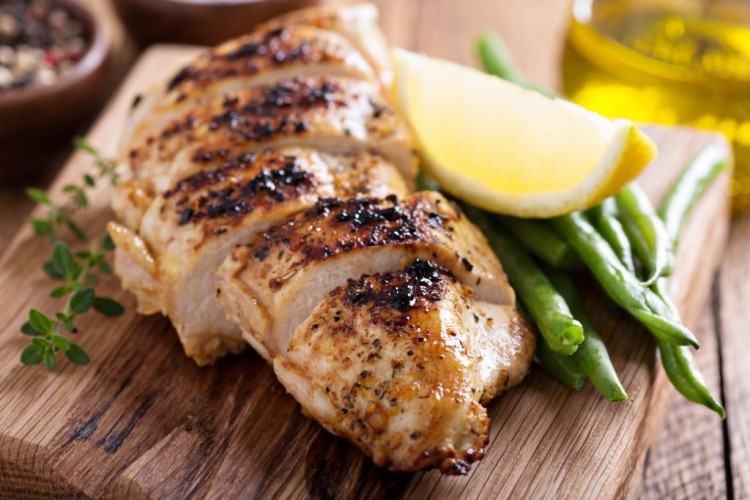
📝 المكونات
- أفخاذ دجاج : 6 قطع
- زبدة : 3 ملاعق كبيرة
- ثوم : رأس مقشر ومفروم
- زنجبيل : ملعقة كبيرة
- ملح : نصف ملعقة صغيرة
- ليمون : 1 حبة مقطع شرائح
👩🍳 طريقة التحضير
- اخلطي الزبدة، الثوم، الزنجبيل، والملح، وادهني بها الدجاج 30 دقيقة.
- اشوي الدجاج على شواية الفحم أو في الفرن 25 دقيقة على نار منخفضة، مع تقليب الجهتين.
- قدميه ساخناً وزيّني بشرائح الليمون.
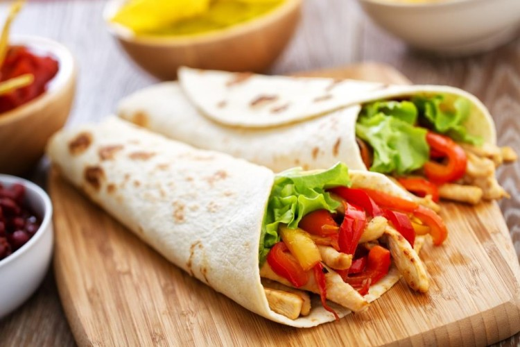
📝 المكونات
- صدر دجاج : 200 غم شرائح
- بصل، فلفل ملوّن، طماطم : حسب الوصفة
- بهارات: فاهيتا، بابريكا، ثوم بودرة، كمون، أوريغانو، ملح، فلفل أسود
- زيت زيتون، عصير ليمون، خبز تورتيلا، جبن شيدر، صلصة حارة
👩🍳 طريقة التحضير
- اخلطي جميع البهارات مع زيت الزيتون وعصير الليمون، وتبّلي الدجاج بها 60 دقيقة.
- سخني مقلاة واسعة، وقلّبي شرائح الدجاج مع البصل والفلفل حتى تنضج.
- ضعي الحشوة على التورتيلا مع الجبن والصلصة الحارة، ولفّيها وقدمي ساخنة.
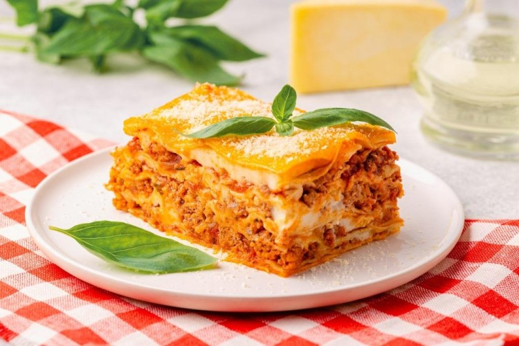
📝 المكونات
- لحم مفروم : 500 غرام
- بصل : 1 حبة (مفروم)
- ثوم : فصان (مفروم)
- زيت الزيتون : 2 ملعقة كبيرة
- صلصة طماطم : 2 كوب
- ملح : 1 ملعقة صغيرة
- فلفل أسود : نصف ملعقة صغيرة
- بابريكا : نصف ملعقة صغيرة
- زعتر : نصف ملعقة صغيرة
- صوص البشاميل: زبدة 2 ملعقة، دقيق 2 ملعقة، حليب 2 كوب، ملح ورشة، جوزة الطيب
- لازانيا : باكيت (شرائح مسلوقة)
- جبن موزاريلا : 2 كوب مبشور
- جبن بارميزان : نصف كوب مبشور
👩🍳 طريقة التحضير
- سخني الزيت، اقلي البصل حتى يذبل ثم الثوم، أضيفي اللحم وقلّبي حتى ينضج ويتغير لونه.
- أضيفي الصلصة والبهارات واتركي الخليط يغلي 10-15 دقيقة.
- للبشاميل: ذوّبي الزبدة، أضيفي الدقيق ثم الحليب تدريجياً مع التحريك، أضيفي الملح وجوزة الطيب حتى يتكثف الصوص.
- رتبي طبقات اللازانيا: صوص اللحم → شرائح اللازانيا → اللحم → القليل من البشاميل → الجبنة، كرري حتى تنتهي المكونات.
- غطّي بالصفيح وأدخليها الفرن 30 دقيقة، ثم شغلي الشواية 5 دقائق لتحمر الجبنة.
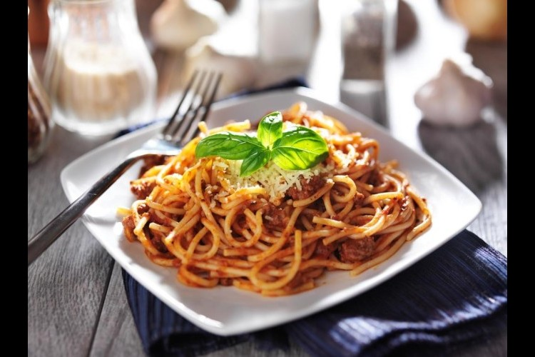
📝 المكونات
- معكرونة : 400 غرام
- زيت الزيتون : ملعقة كبيرة
- بصل : 1 حبة كبيرة شرائح
- ثوم : فص (مهروس)
- باربكيو صوص : نصف كوب
- صلصة طماطم : 2 ملعقة كبيرة
- ماء : كوب
- ملح وفلفل أسود : حسب الرغبة
- جبن موزاريلا : حسب الرغبة
- بقدونس : حسب الرغبة
👩🍳 طريقة التحضير
- اسلقي المكرونة وصفيها.
- سخني الزيت، اقلي البصل 5-7 دقائق، أضيفي الثوم دقيقة.
- أضيفي صوص الباربكيو، صلصة الطماطم، والماء وقلّبي، اتركيه يغلي 5 دقائق.
- أضيفي المكرونة وقلّبي لتتغلف بالصوص، ضعيها بصينية، رشي الجبنة وأدخليها الفرن 5-10 دقائق، زيني بالبقدونس.
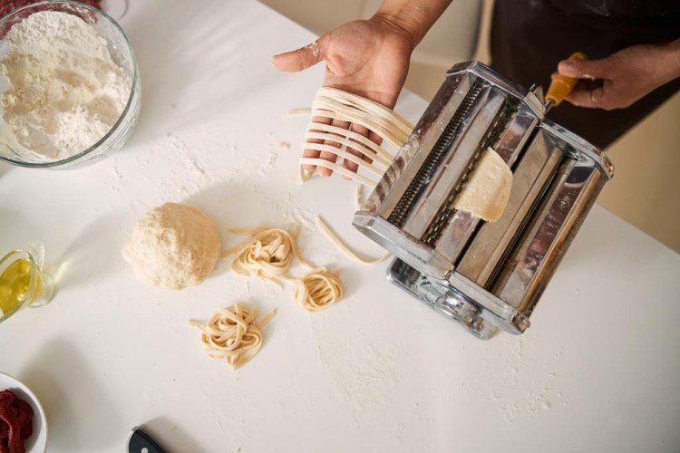
📝 المكونات
- دقيق : 300 غرام
- بيض : 3 حبات
- ملح : حسب الرغبة
👩🍳 طريقة التحضير
- اصنعي حفرة في الدقيق وأضيفي البيض والملح، اخلطي ثم اعجني حتى تصبح عجينة صلبة.
- أضيفي قطرات ماء أو زيت إذا لزم، شكّلي كرة، غطيها واتركيها 15 دقيقة للراحة.
- استمري بالعجن 5 دقائق بين الفينة والأخرى حتى تصبح مرنة.
- قطعي العجينة باستخدام ماكينة الباستا للأشكال المطلوبة.
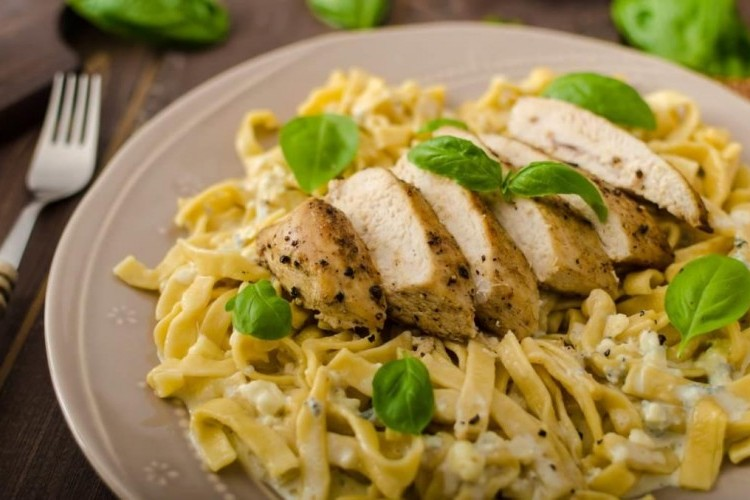
📝 المكونات
- معكرونة : 400 غرام
- صدر دجاج : 4 شرائح مشوي ومقطع
- ثوم : فص (مفروم)
- بصل : 1 حبة (مفروم)
- زيت الزيتون : ملعقة كبيرة
- زبدة : مكعب صغير
- دقيق : ملعقة كبيرة
- حليب : كوب
- كريمة طبخ : نصف كوب
- جبن شيدر : كوب مبشور
- ملح وفلفل أسود : حسب الرغبة
👩🍳 طريقة التحضير
- اسلقي المكرونة حسب التعليمات.
- ذوبي الزبدة، أضيفي الدقيق حتى يصبح الخليط ذهبياً.
- أضيفي الحليب ومرقة الدجاج وكريمة الطبخ تدريجياً حتى يتكثف الصوص.
- أضيفي الجبن وقلّبي حتى يذوب، تبّلي بالملح والفلفل، أضيفي المكرونة والدجاج المشوي وقلّبي.

📝 المكونات
- سباغيتي : 1 عبوة
- زيت : 3 ملاعق كبيرة
- بصل : 1 حبة (مفرومة)
- ثوم : 5 فصوص (مفروم شرائح)
- شطة : نصف ملعقة (اختياري)
- بقدونس : نصف كوب (مفروم)
- جبنة بارميزان : ربع كوب
👩🍳 طريقة التحضير
- اسلقي المعكرونة وصفيها، ثم قلّبيها في قليل من الزيت.
- سخني الزيت، اقلي البصل والثوم حتى يصبح لونه ذهبياً، أضيفي المعكرونة والشطة وقلّبي.
- قدمي المكرونة، وزيني بالبقدونس والجبن المبشور.
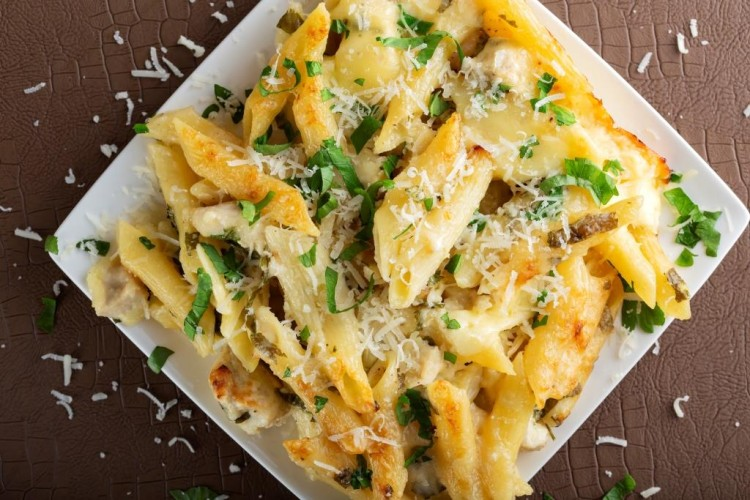
📝 المكونات
- معكرونة : 400 غرام
- لحم مفروم : 500 غرام
- بصل : 1 حبة (مفروم)
- ثوم : فصان (مهروس)
- صلصة طماطم : 2 ملعقة كبيرة
- بهارات مشكلة، ملح وفلفل : حسب الرغبة
- بشاميل: حليب 4 أكواب، زبدة 4 ملاعق، دقيق 4 ملاعق، ملح، فلفل، جوزة الطيب
- جبن موزاريلا وكوب جبن رومي مبشور
👩🍳 طريقة التحضير
- اسلقي المكرونة نصف نضج، صفّيها واتركيها جانباً.
- اقلي البصل، أضيفي اللحم والبهارات والصلصة حتى ينضج.
- حضري البشاميل: ذوّبي الزبدة، أضيفي الدقيق ثم الحليب تدريجياً حتى يصبح صوص كريمي، تبّلي بالملح والفلفل وجوزة الطيب.
- رتّبي الطبقات: المكرونة + صوص البشاميل + اللحم + المكرونة + البشاميل + الجبنة.
- ادخلي الفرن 180° لمدة 30-40 دقيقة حتى يتحمر الوجه، اتركيه 10 دقائق قبل التقطيع.
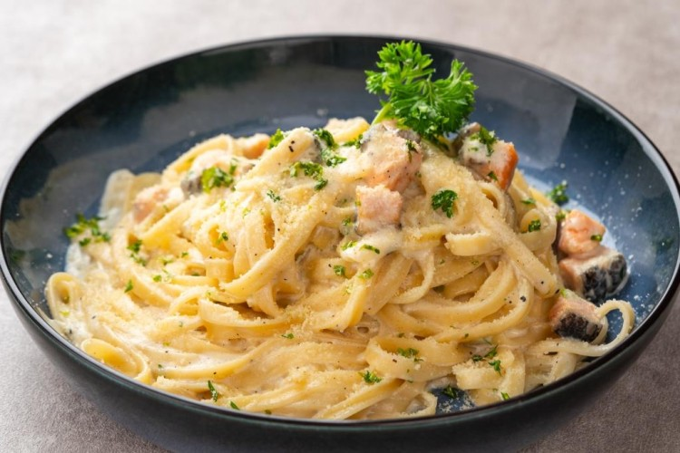
📝 المكونات
- فيتوتشيني : عبوة
- صدر دجاج : 1 مقطع شرائح
- زيت : ملعقة كبيرة
- ملح، فلفل أسود : ملعقة صغيرة لكل منهما
- بهارات إيطالية : ملعقة كبيرة
- ثوم بودرة : ملعقة صغيرة
- فطر : كوب مقطع
- كريمة : 3 أكواب
- جبن بارميزان : ربع كوب
- بصل أخضر : حسب الرغبة
👩🍳 طريقة التحضير
- اسلقي المكرونة حسب التعليمات.
- اقلي الدجاج مع الزيت، الملح، الفلفل، الثوم والبهارات.
- أضيفي الفطر ثم الكريمة، ثم المكرونة وقلّبي.
- زيني بالبارميزان والبصل الأخضر وقدمي ساخنة.
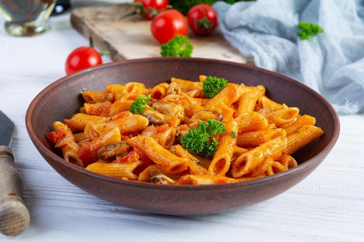
📝 المكونات
- معكرونة : 250 غرام
- زيت زيتون : 2 ملعقة كبيرة
- ثوم : 3 فصوص مفروم
- بصل : 1 صغير مفروم
- معجون طماطم : 2 ملعقة كبيرة
- طماطم : 2 مبشورة
- فلفل أحمر حار : ملعقة صغيرة
- بابريكا، كمون، ملح، فلفل أسود : حسب الرغبة
- جبن موزاريلا : للتقديم
👩🍳 طريقة التحضير
- اسلقي المكرونة وصفيها، احتفظي بنصف كوب من ماء السلق.
- سخني الزيت، اقلي البصل والثوم، أضيفي معجون الطماطم والطماطم المبشورة، والتوابل، اتركي الصوص يغلي 7-10 دقائق.
- أضيفي المكرونة وقلّبيها مع الصوص، قدميها ساخنة مع الجبن المبشور.
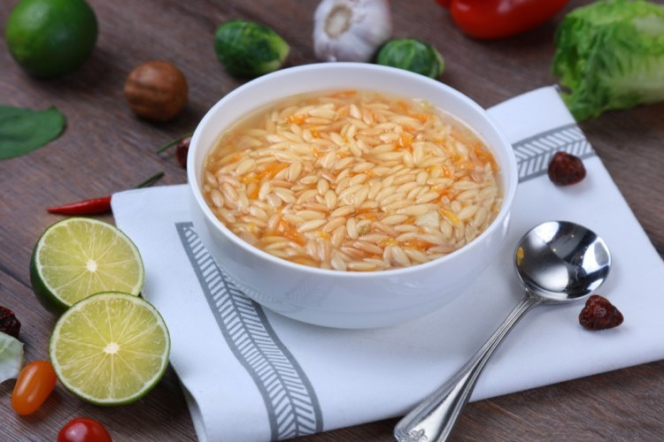
📝 المكونات
- معكرونة لسان العصفور : كوب
- زيت نباتي : 2 ملعقة كبيرة
- مرق دجاج : 4 أكواب ساخن
- ملح وفلفل : حسب الرغبة
- كزبرة يابسة : نصف ملعقة صغيرة
- كركم : ربع ملعقة صغيرة
👩🍳 طريقة التحضير
- سخني الزيت، أضيفي المعكرونة وقلّبي حتى تتحمر قليلاً.
- أضيفي المرق تدريجياً واتركيها تغلي.
- خففي النار، أضيفي الملح، الفلفل، الكزبرة والكركم، اتركيها 10-12 دقيقة حتى تنضج.
- قدميها ساخنة.
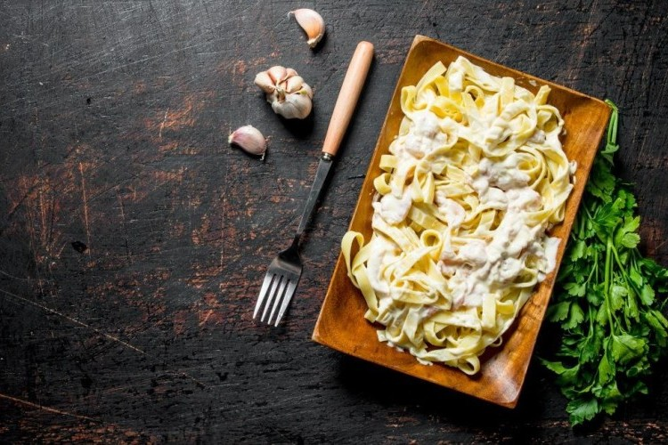
📝 المكونات
- فيتوتشيني : نصف كيلو
- زبدة : 8 ملاعق كبيرة
- كريمة طبخ ثقيلة : 2 كوب
- جبن بارميزان : 2 كوب مبشور
- ملح : ملعقة صغيرة
- فلفل أبيض : نصف ملعقة صغيرة
- ماء سلق : كوب (اختياري)
👩🍳 طريقة التحضير
- اغلي الماء واسلقي الفيتوتشيني 10 دقائق، احتفظي بكوب ماء السلق.
- في قدر، اغلي الكريمة والزبدة مع ماء السلق، الملح والفلفل دقيقتين.
- أضيفي نصف كمية الجبنة، ثم الفيتوتشيني، اتركيها تغلي 3 دقائق مع التقليب.
- ضعي الفيتوتشيني في طبق التقديم، وزيني بالجبنة المتبقية.